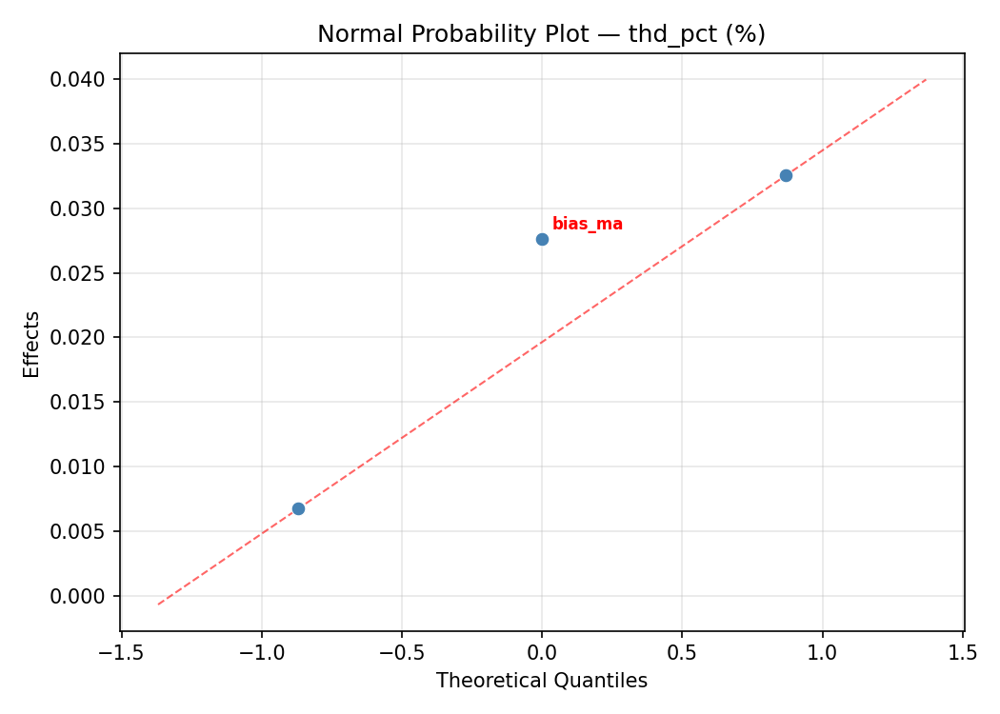
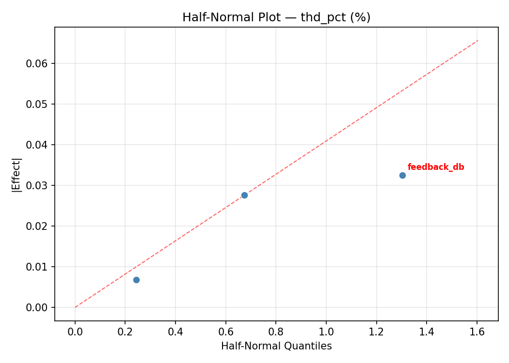
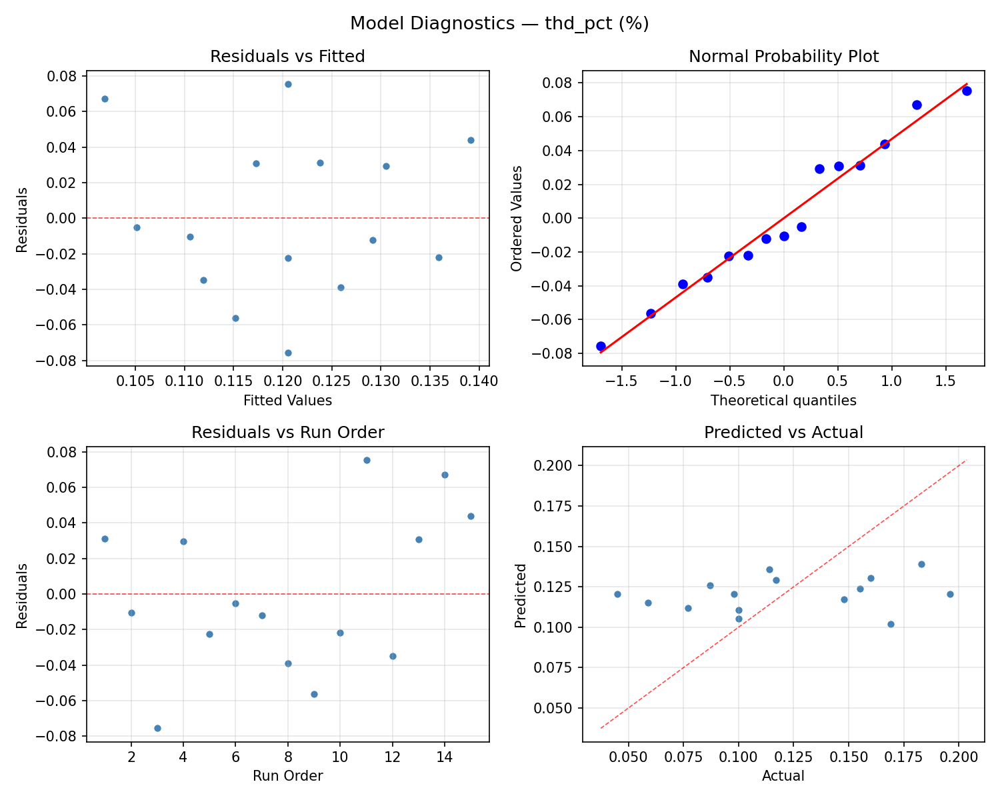
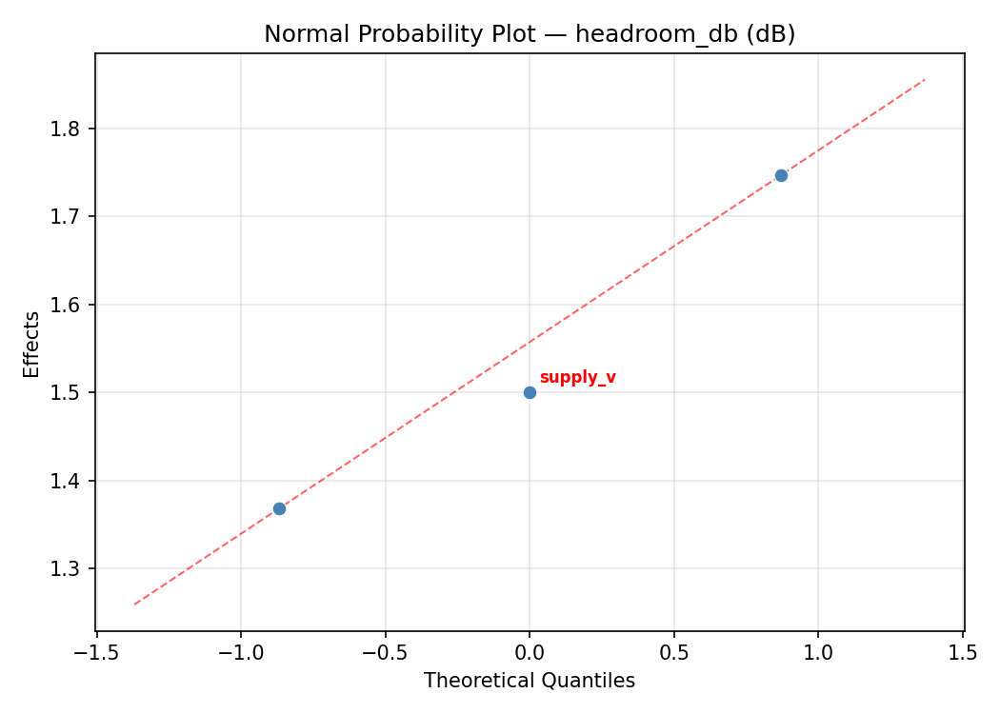
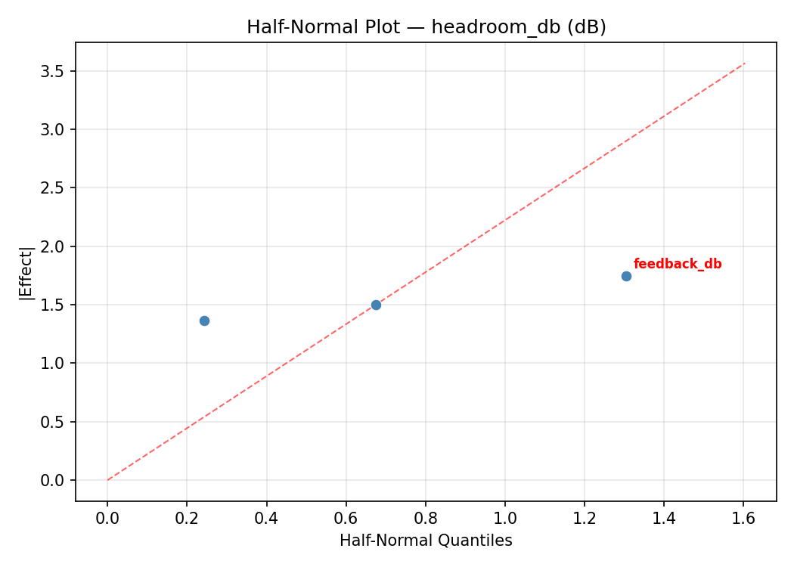
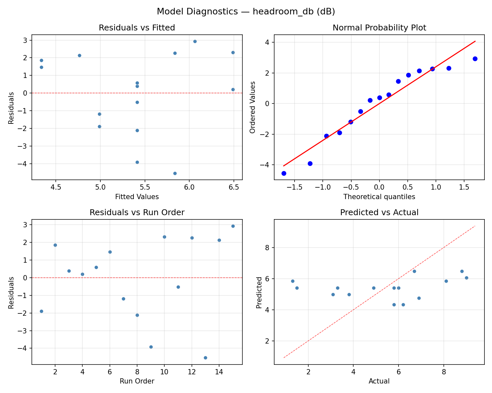

Summary
This experiment investigates audio amplifier biasing. Box-Behnken design to maximize THD+N and headroom by tuning bias current, supply voltage, and feedback ratio.
The design varies 3 factors: bias ma (mA), ranging from 10 to 100, supply v (V), ranging from 15 to 35, and feedback db (dB), ranging from 10 to 30. The goal is to optimize 2 responses: thd pct (%) (minimize) and headroom db (dB) (maximize). Fixed conditions held constant across all runs include topology = class_AB, load = 8ohm.
A Box-Behnken design was chosen because it efficiently fits quadratic models with 3 continuous factors while avoiding extreme corner combinations — requiring only 15 runs instead of the 8 needed for a full factorial at two levels.
Quadratic response surface models were fitted to capture potential curvature and factor interactions. The RSM contour plots below visualize how pairs of factors jointly affect each response.
Key Findings
For thd pct, the most influential factors were bias ma (42.7%), feedback db (31.3%), supply v (26.0%). The best observed value was 0.045 (at bias ma = 10, supply v = 25, feedback db = 10).
For headroom db, the most influential factors were feedback db (58.6%), supply v (28.9%), bias ma (12.5%). The best observed value was 9.0 (at bias ma = 55, supply v = 15, feedback db = 30).
Recommended Next Steps
- Run confirmation experiments at the predicted optimal settings to validate the model.
- Consider whether any fixed factors should be varied in a future study.
Experimental Setup
Factors
| Factor | Low | High | Unit |
|---|
bias_ma | 10 | 100 | mA |
supply_v | 15 | 35 | V |
feedback_db | 10 | 30 | dB |
Fixed: topology = class_AB, load = 8ohm
Responses
| Response | Direction | Unit |
|---|
thd_pct | ↓ minimize | % |
headroom_db | ↑ maximize | dB |
Configuration
{
"metadata": {
"name": "Audio Amplifier Biasing",
"description": "Box-Behnken design to maximize THD+N and headroom by tuning bias current, supply voltage, and feedback ratio"
},
"factors": [
{
"name": "bias_ma",
"levels": [
"10",
"100"
],
"type": "continuous",
"unit": "mA"
},
{
"name": "supply_v",
"levels": [
"15",
"35"
],
"type": "continuous",
"unit": "V"
},
{
"name": "feedback_db",
"levels": [
"10",
"30"
],
"type": "continuous",
"unit": "dB"
}
],
"fixed_factors": {
"topology": "class_AB",
"load": "8ohm"
},
"responses": [
{
"name": "thd_pct",
"optimize": "minimize",
"unit": "%"
},
{
"name": "headroom_db",
"optimize": "maximize",
"unit": "dB"
}
],
"settings": {
"operation": "box_behnken",
"test_script": "use_cases/275_audio_amplifier/sim.sh"
}
}
Experimental Matrix
The Box-Behnken Design produces 15 runs. Each row is one experiment with specific factor settings.
| Run | bias_ma | supply_v | feedback_db |
|---|
| 1 | 55 | 15 | 10 |
| 2 | 55 | 25 | 20 |
| 3 | 100 | 25 | 30 |
| 4 | 100 | 25 | 10 |
| 5 | 55 | 25 | 20 |
| 6 | 55 | 25 | 20 |
| 7 | 10 | 25 | 30 |
| 8 | 100 | 15 | 20 |
| 9 | 55 | 15 | 30 |
| 10 | 100 | 35 | 20 |
| 11 | 10 | 25 | 10 |
| 12 | 55 | 35 | 30 |
| 13 | 10 | 15 | 20 |
| 14 | 10 | 35 | 20 |
| 15 | 55 | 35 | 10 |
Step-by-Step Workflow
1
Preview the design
$ python doe.py info --config use_cases/275_audio_amplifier/config.json
2
Generate the runner script
$ python doe.py generate --config use_cases/275_audio_amplifier/config.json \
--output use_cases/275_audio_amplifier/results/run.sh --seed 42
3
Execute the experiments
$ bash use_cases/275_audio_amplifier/results/run.sh
4
Analyze results
$ python doe.py analyze --config use_cases/275_audio_amplifier/config.json
5
Get optimization recommendations
$ python doe.py optimize --config use_cases/275_audio_amplifier/config.json
6
Multi-objective optimization
With 2 competing responses, use --multi to find the best compromise via Derringer–Suich desirability.
$ python doe.py optimize --config use_cases/275_audio_amplifier/config.json --multi
7
Generate the HTML report
$ python doe.py report --config use_cases/275_audio_amplifier/config.json \
--output use_cases/275_audio_amplifier/results/report.html
Features Exercised
| Feature | Value |
|---|
| Design type | box_behnken |
| Factor types | continuous (all 3) |
| Arg style | double-dash |
| Responses | 2 (thd_pct ↓, headroom_db ↑) |
| Total runs | 15 |
Analysis Results
Generated from actual experiment runs using the DOE Helper Tool.
Response: thd_pct
Top factors: bias_ma (42.7%), feedback_db (31.3%), supply_v (26.0%).
ANOVA
| Source | DF | SS | MS | F | p-value |
|---|
| Source | DF | SS | MS | F | p-value |
| bias_ma | 2 | 0.0089 | 0.0044 | 1.114 | 0.3742 |
| supply_v | 2 | 0.0035 | 0.0017 | 0.438 | 0.6601 |
| feedback_db | 2 | 0.0057 | 0.0029 | 0.715 | 0.5180 |
| Lack | of | Fit | 6 | 0.0033 | 0.0005 |
| Pure | Error | 2 | 0.0080 | | |
| Error | 8 | 0.0113 | 0.0040 | | |
| Total | 14 | 0.0294 | 0.0021 | | |
Pareto Chart

Main Effects Plot

Normal Probability Plot of Effects

Half-Normal Plot of Effects

Model Diagnostics

Response: headroom_db
Top factors: feedback_db (58.6%), supply_v (28.9%), bias_ma (12.5%).
ANOVA
| Source | DF | SS | MS | F | p-value |
|---|
| Source | DF | SS | MS | F | p-value |
| bias_ma | 2 | 0.4927 | 0.2463 | 0.017 | 0.9830 |
| supply_v | 2 | 2.4430 | 1.2215 | 0.085 | 0.9193 |
| feedback_db | 2 | 10.5927 | 5.2963 | 0.369 | 0.7028 |
| Lack | of | Fit | 6 | 39.3422 | 6.5570 |
| Pure | Error | 2 | 28.7267 | | |
| Error | 8 | 68.0689 | 14.3633 | | |
| Total | 14 | 81.5973 | 5.8284 | | |
Pareto Chart

Main Effects Plot

Normal Probability Plot of Effects

Half-Normal Plot of Effects

Model Diagnostics

Response Surface Plots
3D surfaces fitted with quadratic RSM. Red dots are observed data points.
headroom db bias ma vs feedback db

headroom db bias ma vs supply v

headroom db supply v vs feedback db

thd pct bias ma vs feedback db

thd pct bias ma vs supply v

thd pct supply v vs feedback db

Multi-Objective Optimization
When responses compete, Derringer–Suich desirability finds the best compromise.
Each response is scaled to a 0–1 desirability, then combined via a weighted geometric mean.
Overall Desirability
D = 0.8126
Per-Response Desirability
| Response | Weight | Desirability | Predicted | Dir |
|---|
thd_pct |
1.0 |
|
0.08 0.7619 0.08 % |
↓ |
headroom_db |
1.5 |
|
8.10 0.8483 8.10 dB |
↑ |
Recommended Settings
| Factor | Value |
|---|
bias_ma | 55 mA |
supply_v | 25 V |
feedback_db | 20 dB |
Source: from observed run #12
Trade-off Summary
Sacrifice = how much worse than single-objective best.
| Response | Predicted | Best Observed | Sacrifice |
|---|
headroom_db | 8.10 | 9.00 | +0.90 |
Top 3 Runs by Desirability
| Run | D | Factor Settings |
|---|
| #10 | 0.7482 | bias_ma=100, supply_v=35, feedback_db=20 |
| #3 | 0.7055 | bias_ma=55, supply_v=25, feedback_db=20 |
Model Quality
| Response | R² | Type |
|---|
headroom_db | 0.7094 | quadratic |
Full Multi-Objective Output
============================================================
MULTI-OBJECTIVE OPTIMIZATION
Method: Derringer-Suich Desirability Function
============================================================
Overall desirability: D = 0.8126
Response Weight Desirability Predicted Direction
---------------------------------------------------------------------
thd_pct 1.0 0.7619 0.08 % ↓
headroom_db 1.5 0.8483 8.10 dB ↑
Recommended settings:
bias_ma = 55 mA
supply_v = 25 V
feedback_db = 20 dB
(from observed run #12)
Trade-off summary:
thd_pct: 0.08 (best observed: 0.04, sacrifice: +0.03)
headroom_db: 8.10 (best observed: 9.00, sacrifice: +0.90)
Model quality:
thd_pct: R² = 0.7403 (quadratic)
headroom_db: R² = 0.7094 (quadratic)
Top 3 observed runs by overall desirability:
1. Run #12 (D=0.8126): bias_ma=55, supply_v=25, feedback_db=20
2. Run #10 (D=0.7482): bias_ma=100, supply_v=35, feedback_db=20
3. Run #3 (D=0.7055): bias_ma=55, supply_v=25, feedback_db=20
Full Analysis Output
=== Main Effects: thd_pct ===
Factor Effect Std Error % Contribution
--------------------------------------------------------------
bias_ma 0.0645 0.0118 42.7%
feedback_db 0.0473 0.0118 31.3%
supply_v 0.0393 0.0118 26.0%
=== ANOVA Table: thd_pct ===
Source DF SS MS F p-value
-----------------------------------------------------------------------------
bias_ma 2 0.0089 0.0044 1.114 0.3742
supply_v 2 0.0035 0.0017 0.438 0.6601
feedback_db 2 0.0057 0.0029 0.715 0.5180
Lack of Fit 6 0.0033 0.0005 0.137 0.9752
Pure Error 2 0.0080 0.0040
Error 8 0.0113 0.0040
Total 14 0.0294 0.0021
=== Summary Statistics: thd_pct ===
bias_ma:
Level N Mean Std Min Max
------------------------------------------------------------
10 4 0.1470 0.0501 0.0770 0.1960
100 4 0.0825 0.0256 0.0450 0.1000
55 7 0.1271 0.0427 0.0590 0.1830
supply_v:
Level N Mean Std Min Max
------------------------------------------------------------
15 4 0.1353 0.0322 0.1000 0.1690
25 7 0.1261 0.0529 0.0590 0.1960
35 4 0.0960 0.0447 0.0450 0.1480
feedback_db:
Level N Mean Std Min Max
------------------------------------------------------------
10 4 0.1222 0.0265 0.0980 0.1600
20 7 0.1027 0.0502 0.0450 0.1830
30 4 0.1500 0.0464 0.0870 0.1960
=== Main Effects: headroom_db ===
Factor Effect Std Error % Contribution
--------------------------------------------------------------
feedback_db 2.2250 0.6233 58.6%
supply_v 1.1000 0.6233 28.9%
bias_ma 0.4750 0.6233 12.5%
=== ANOVA Table: headroom_db ===
Source DF SS MS F p-value
-----------------------------------------------------------------------------
bias_ma 2 0.4927 0.2463 0.017 0.9830
supply_v 2 2.4430 1.2215 0.085 0.9193
feedback_db 2 10.5927 5.2963 0.369 0.7028
Lack of Fit 6 39.3422 6.5570 0.457 0.8069
Pure Error 2 28.7267 14.3633
Error 8 68.0689 14.3633
Total 14 81.5973 5.8284
=== Summary Statistics: headroom_db ===
bias_ma:
Level N Mean Std Min Max
------------------------------------------------------------
10 4 5.7000 2.1726 3.1000 8.1000
100 4 5.2250 1.2868 3.3000 6.0000
55 7 5.3571 3.2140 1.3000 9.0000
supply_v:
Level N Mean Std Min Max
------------------------------------------------------------
15 4 4.9000 1.7569 3.1000 6.9000
25 7 5.3714 2.4329 1.5000 9.0000
35 4 6.0000 3.3853 1.3000 8.8000
feedback_db:
Level N Mean Std Min Max
------------------------------------------------------------
10 4 6.3250 2.0614 3.8000 8.8000
20 7 5.6429 2.6235 1.5000 9.0000
30 4 4.1000 2.3777 1.3000 6.9000
Optimization Recommendations
=== Optimization: thd_pct ===
Direction: minimize
Best observed run: #3
bias_ma = 10
supply_v = 25
feedback_db = 10
Value: 0.045
RSM Model (linear, R² = 0.1536, Adj R² = -0.0772):
Coefficients:
intercept +0.1205
bias_ma +0.0072
supply_v +0.0215
feedback_db +0.0070
RSM Model (quadratic, R² = 0.7614, Adj R² = 0.3319):
Coefficients:
intercept +0.1340
bias_ma +0.0073
supply_v +0.0215
feedback_db +0.0070
bias_ma*supply_v -0.0025
bias_ma*feedback_db -0.0070
supply_v*feedback_db -0.0275
bias_ma^2 -0.0533
supply_v^2 +0.0293
feedback_db^2 -0.0013
Curvature analysis:
bias_ma coef=-0.0533 negligible curvature
supply_v coef=+0.0293 negligible curvature
feedback_db coef=-0.0013 negligible curvature
Predicted optimum (from quadratic model, at observed points):
bias_ma = 55
supply_v = 35
feedback_db = 10
Predicted value: 0.2040
Surface optimum (via L-BFGS-B, quadratic model):
bias_ma = 10
supply_v = 16.1966
feedback_db = 10
Predicted value: 0.0356
Model quality: Good fit — general trends are captured, some noise remains.
Factor importance:
1. bias_ma (effect: 0.1, contribution: 47.7%)
2. supply_v (effect: 0.1, contribution: 41.7%)
3. feedback_db (effect: 0.0, contribution: 10.7%)
=== Optimization: headroom_db ===
Direction: maximize
Best observed run: #15
bias_ma = 55
supply_v = 15
feedback_db = 30
Value: 9.0
RSM Model (linear, R² = 0.4568, Adj R² = 0.3086):
Coefficients:
intercept +5.4133
bias_ma +1.5375
supply_v -1.5000
feedback_db -0.2125
RSM Model (quadratic, R² = 0.6055, Adj R² = -0.1046):
Coefficients:
intercept +4.3667
bias_ma +1.5375
supply_v -1.5000
feedback_db -0.2125
bias_ma*supply_v +0.1000
bias_ma*feedback_db +0.4250
supply_v*feedback_db -0.3000
bias_ma^2 -0.3208
supply_v^2 +0.7542
feedback_db^2 +1.5292
Curvature analysis:
feedback_db coef=+1.5292 convex (has a minimum)
supply_v coef=+0.7542 convex (has a minimum)
bias_ma coef=-0.3208 concave (has a maximum)
Notable interactions:
bias_ma*feedback_db coef=+0.4250 (synergistic)
Predicted optimum (from linear model, at observed points):
bias_ma = 100
supply_v = 15
feedback_db = 20
Predicted value: 8.4508
Surface optimum (via L-BFGS-B, linear model):
bias_ma = 100
supply_v = 15
feedback_db = 10
Predicted value: 8.6633
Model quality: Weak fit — consider adding center points or using a different design.
Factor importance:
1. bias_ma (effect: 3.1, contribution: 39.5%)
2. supply_v (effect: 3.0, contribution: 38.5%)
3. feedback_db (effect: 1.7, contribution: 22.0%)